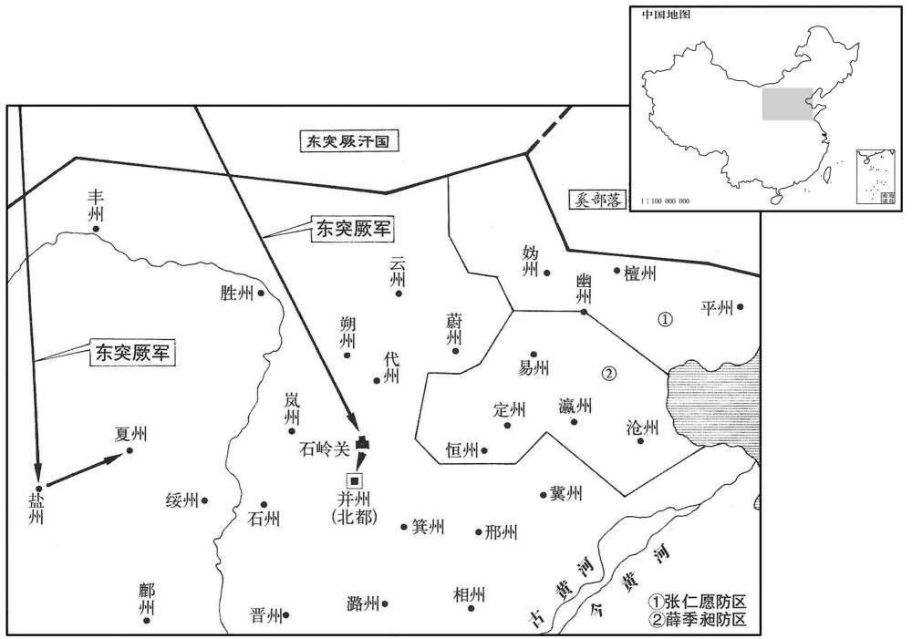

公元702年资治通鉴：本年记事、原文与白话对照
按原书编年位置阅读；追叙和史论不等于本年发生的事件。白话采用所据译本，缺译不以生成译文补齐。
卷207 · 本年记事
公元702年 · 唐则天顺圣皇后长安二年
二年〔（壬寅、七〇二）〕
本年事件索引（现代整理）

本年形势与背景参考图
春，正月，乙西，初设武举。〔武举之制，有长垛、马射、步射、平射、筒射、马枪、翘关、负重、身材之选。唐六典曰：武举以七等阅其人：一曰射长垛，试射长垛三十发不出第三院为第，入中院为上，入次院为次上，入外院为次。二曰骑射，发而共中为上，或中或不中为次上，总不中为次。三曰马枪，三板四板为上，二板为次上，一板及不为次。四曰步射，射草人中者为之上，虽中而不法，虽法而不中者为次。五曰材貌，以身长六尺已上者为次上，已下为次。六曰言语，有神采堪统领者为次上，无者为次。七曰举重，谓翘关，率以五次上为第。皆试其高第以名闻。〕
两版字句有差异，建议核对原文。
春季，正月，乙酉（十七日），武则天第一次在科举考试中增设武举。
突厥寇盐、夏二州。三月，庚寅，突厥破石岭，〔忻州定襄县有石岭关。杜佑曰；定襄本汉阳曲县，有石岭关甚险固。汉定襄郡在今马邑郡地。〕寇井州。以雍州长史薛季昶摄右台大夫，充山东防御军大使，沧，瀛、幽、易，恒、定等州诸军皆受季昶节度。〔使，疏吏翻。恒，户发翻。〕夏，四月，以幽州刺史张仁愿专知幽、平、妫、檀防御，〔妫，居为翻。〕仍与季昶相知，以拒突厥。
突厥兵进犯盐州和夏州。三月，庚寅（二十三日），突厥兵攻破石岭关，进犯并州。武则天任命雍州长史薛季昶为代理右台大夫，充任山东防御军大使，沧州、瀛州、幽州、易州、恒州、定州等处兵马都归他指挥调度。夏季，四月，武则天又指派幽州刺史张仁愿专门主持幽州、平州、妫州、檀州的军事防御工作，并且让他与薛季昶互相配合，以抵御突厥军队的进犯。
五月，壬申，苏安恒复上疏曰；〔复，扶又翻。〕「臣闻天下者，神尧、文武之天下也，〔高祖，神尧皇帝；太宗，文武皇帝。〕陛下虽居正统，实因唐旧基。当今太子追回，〔谓召庐陆王自房陆回，复为太子。〕年德俱盛，陛下贪其宝位而忘母子深恩，将何圣颜以见唐家宗庙，将何诰命以谒大帝坟陆﹖〔高宗称天皇大帝。〕陛下何故日夜积忧不知锺鸣漏尽！〔魏田豫告老曰：譬犹锺鸣漏尽而夜行不休，此罪人也。〕臣愚以为天意人事，还归李家。陛下虽安天位，殊不知物极则反，器满则倾。臣何惜一朝之命而不安万乘之国哉！」〔言不顾其死而上疏．欲以安国也。乘，绳证翻。〕太后亦不之罪。
五月，壬申（初六），苏安恒再次上疏说：“臣听说这天下是高祖神尧皇帝和太宗文武皇帝的天下，陛下虽居皇帝之位，但实际所依靠的毕竟是大唐旧有的基业。现在太子重新得立，正当壮年，品德高尚，陛下因贪恋皇位而忘却母子之间的深厚恩情，将以什么脸面去见供奉在宗庙之中的大唐列祖列宗，又将以何种身份去谒见大唐高宗皇帝的陵寝？陛下为什么还要日夜忧虑国事，而不明白自己已到了晨钟已响、夜漏将尽的暮年！臣愚昧，以为天意人心，都希望将皇位归还李家。陛下只安于皇位，很不明白物极必反、器满则倾的道理！臣为了使社稷长治久安，又怎么能顾惜个人的短暂生命呢！”武则天也没有加罪于他。
乙未，以相王为井州牧，充安北道行军元帅，〔帅，所类翻。〕以魏元忠为之副。
乙未（二十九日），武则天任命相王李旦为并州牧，充任安北道行军元帅，任命魏元忠作他的副职。
六月，壬戌，召神都留守韦巨源诣京师，以副留守李峤代之。〔守，手又翻。〕
六月，壬戌（二十六日），武则天将神都留守韦巨源召到京师长安，指派神都副留守李峤代行他的职务。
秋，七月，甲午，突厥寇代州。
秋季，七月，甲午（二十九日），突厥兵进犯代州。
司仆卿张昌宗〔光宅元年，改太仆寺为司仆寺。〕兄弟贵成，势倾朝野。〔朝，直遥翻。〕八月，戊午，太子、相王、太平公主上表请封昌宗为王，制不许；壬戌，又请，乃赐爵邺国公。
司仆卿张昌宗兄弟贵显已极，权倾朝野。八月，戊午（二十三日），太子李显、相王李旦、太平公主上表，请求封张昌宗为王，武则天拒绝了这一建议；壬戌（二十七），这些人又请求封张昌宗为王，武则天才答应赐张昌宗为邺国公。
敕：「自今有告言扬州及豫、博余党，〔扬州事见二百三卷光宅元年。豫、博事见二百四卷垂拱四年。〕一无所问，内外官司无得为理。」〔为，于伪翻。〕
武则天颁下敕书：“从现在起如果再有揭发光宅元年扬州徐敬业谋反案以及垂拱四年豫州李贞、博州李冲父子谋反案余党的，都不必过问，朝廷内外各衙门一律不得受理。”
九月，乙丑朔，日有食之，不尽如钩，神都见甚既。
九月，乙丑朔（初一），出现日食，没有全食，还看到像镰刀一样的形状，在神都能见到日全食。
壬申，突厥寇忻州。
壬申（初八），突厥兵进犯忻州。
己卯，吐蕃遗其臣论弥萨来求和。〔萨，桑葛翻。〕
己卯（十五日），吐蕃派大臣论弥萨前来求和。
庚辰，以太子宾客武三思为大谷道大总管，洛州长史敬晖为副；辛已，又以相王旦为井州道元帅，三思与武攸宜、魏元忠为之副；姚元崇为长史，司礼少卿郑杲为司马；〔欲以击突厥，〕然竟不行。
庚辰（十六日），武则天任命太子宾客武三思为大谷道大总管，任命洛州长史敬晖为武三思的副职；辛巳（十七日），武则天又任命相王李旦为并州道元帅，任命武三思与武攸宜、魏元忠三人为李旦的副职；任命姚元崇为长史，司礼少卿郑杲为司马，但是却没有赴任。
癸未，宴论弥萨于麟德殿。〔麟德殿在大明宫右银台门内；殿西重廊之后，即翰林院。是殿有三面，亦曰三殿。〕时凉州都督唐休璟入朝，亦预宴。〔璟，居永翻。朝，直遥翻。〕弥萨屡窥之。太后问其故，对曰：「洪源之战，此将军猛厉无敌，故欲识之。」太后擢休璟为右武威、金吾二卫大将军。〔龙朔改左、右威卫曰左、右武威卫。〕休璟练习边事，自碣石以西踰四镇，鼦亘万里，山川要害，皆能记之。〔碣石在辽西，四镇在西域。此言唐之西、北三边，其山川要害，休璟皆能记之也。喝，其谒翻。亘，古邓翻。〕
癸未（十九日），武则天在麟德殿宴请吐蕃大臣论弥萨。这时凉州都督唐休正好入朝，也参加了这次宴会。论弥萨屡次偷看唐休。武则天询问论弥萨这样做的原因，论弥萨回答说：“在洪源战役中，这位将军勇猛无敌，所以我想要认识他。”武则天提拔唐休为右武威、金吾二卫大将军。唐休极为熟悉边境地区的军政事务，自辽东碣石以西直至安西四镇以外绵延万里的山川险要之处，他都能记住。
冬，十月，甲辰，天官侍郎、同平章事顾琮薨。
冬季，十月，甲辰（初十），天官侍郎、同平章事顾琮去世。
戊申，吐蕃赞普将万余人寇茂州，〔将，即亮翻。〕都督陈大慈与之四战，皆破之，斩首千余级。
戊申（十四日），吐蕃赞普率领一万多人马进犯茂州，都督陈大慈与吐蕃军队四次交战，每次都打败了他们，共斩敌首一千余级。
十一月，辛未，监察御史魏靖上疏，以为：「陛下既知来俊臣之奸，处以极法，〔监，古衔翻。上，时掌翻。疏，所去翻。处昌吕翻。〕乞详覆俊臣等所推大狱，伸其枉滥。」太后乃命监察御史苏颋按覆俊臣等旧狱，由是雪免者甚众。〔考异曰：松窗杂录：「中宗尝召宰相苏坏、李峤子进见，二丞相子皆童年，迎抚于赭袍前，赐与甚厚。因语二儿曰：『尔宜意所通书，可为奏吾者言之。』颋应曰『木从绳则正，后从谏则圣。』峤子亡其名，亦进曰：『斮朝涉之胫，剖贤人之心。』上曰：『苏坏有子，李峤无儿。』」按颋此年已为御史，緕为相时颋为中书舍人，父子同掌枢密，非童年也。今不取。〕颋，夔之曾孙也。〔颋，他鼎翻。苏夔，威之子，隋开皇初议乐。〕
十一月，辛未（初八），监察御史魏靖上疏认为：“陛下已了解来俊臣的奸邪，并将他处死。臣请求详细复核来俊臣等人当时所主持办理的重大案件，为那些受冤枉的人平反昭雪。”武则天于是指派监察御史苏复核来俊臣等人所处理的案件，很多人因此而得以免罪昭雪。苏，是苏夔的曾孙。
戊子，太后祀南郊，赦天下。
戊子（二十五日），武则天到南郊祭祀，大赦天下罪人。
十二月，甲午，以魏元忠为安东道安抚大使，〔使，疏吏翻；下同。〕羽林卫大将军李多祚检校幽州都督，右羽林卫将军薛讷、左武卫将军骆务整为之副。
十二月，甲午（初二），武则天任命魏元忠为安东道安抚大使，羽林卫大将军李多祚为检校幽州都督，右羽林卫将军薛讷、左武卫将军骆务整作他的副职。
戊申，置北庭都护府于庭州。〔太宗平高昌，于钿州之北置庭州，即满车师后王之地。〕
戊申（十六日），朝廷在西域的庭州设置北庭都护府。
侍御史张循宪为河东采访使，有疑事不能决，病之，问侍吏曰：「此有佳客，可与议事者乎﹖」吏言前平乡尉猗氏张嘉贞有异才，〔魏收志：广平郡任县有平乡城。隋置平乡县，治古巨鹿城，属邢州。猗氏县，古郇国，自汉以来属河东郡。〕循宪召见，询以事；嘉贞为条析理分，〔随条而析之，随理而分之。为，于伪翻。〕莫不浩然；〔浩，与酒同，苏蟹翻。浩然，悚然也。〕循宪因请为奏，皆意所未及。循宪还，见太后，〔见，贤遍翻。〕太后善其奏，循宪具言嘉贞所为，且请以己之官授之。太后曰：「朕宁无一官自进贤邪！」因召嘉贞，入见内殿，〔见，贤遍翻。〕与语，大悦，即拜监察御史；擢循宪司勋郎中，〔唐司勋郎掌邦国官人之勋级，属吏部。监，古衔翻。〕赏其得人也。
侍御史张循宪任河东采访使，有疑难事无法决断，很是忧虑，于是问侍奉他的官吏道：“这个地方有没有可以商议事情的杰出人才呀？”官吏告诉他，曾任平乡尉的猗氏县人张嘉贞有奇才。张循宪召见张嘉贞，向他请教这件疑难问题的处理方法。张嘉贞于是对这个问题的各个方面和其中的道理进行了分析，没有一点不清晰之处。张循宪于是请他代写奏疏，所谈的都是自己没有考虑到的。张循宪回到朝中，见到武则天，武则天称赞他的奏疏写得很好，张循宪于是把疏文为张嘉贞所拟的事全部禀告了武则天，并请求武则天允许将他自己所担任的侍御史职务授给张嘉贞。武则天说：“朕难道没有一个官位来荐引提拔贤能之士吗！”于是在内殿召见张嘉贞，与他进行了谈话，感到非常满意，当即任命他为监察御史；为了奖赏张循宪发现人才的功劳，武则天还提升他作了司勋郎中。